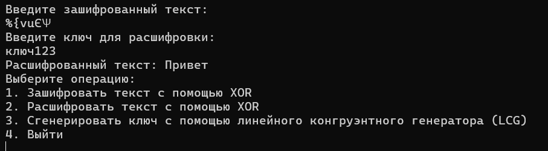
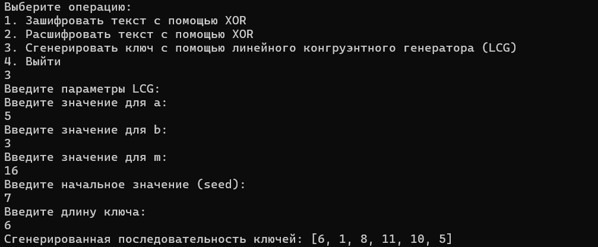

lang: ru-RU
title: “Лабораторная работа №3”
subtitle: “Дисциплина: Математические основы защиты информации и
информационной безопасности”
author: “Мохаммад хоссейн фарзанфар”
Познакомиться с шифрованием с помощью XOR и генерацией ключей с использованием линейного конгруэнтного генератора (LCG).
xor_encrypt, которая реализует побитовое сложение
(XOR) между символами текста и ключа. Для расшифровки текста
используется та же функция, так как операция XOR обратима.```julia function xor_encrypt(plaintext::String, key::String) if length(key) < length(plaintext) error(“Key must be as long as or longer than the plaintext.”) end
encrypted = [Char(codepoint(plaintext[i]) ⊻ codepoint(key[i])) for i in 1:length(plaintext)]
return join(encrypted)end ```
Пример 1:
Текст для шифрования: Привет
Ключ для шифрования: ключ123
Вывод программы:
```plaintext Зашифрованный текст: %ƛvuЄΨ ```
Пример 2:
Зашифрованный текст: %ƛvuЄΨ
Ключ для расшифровки: ключ123
Вывод программы:
```plaintext Расшифрованный текст: Привет ``` 
lcg, которая генерирует последовательность псевдослучайных
чисел на основе параметров a, b, m и seed.```julia function lcg(a, b, m, seed, length) random_sequence = Int[] yi = seed for i in 1:length yi = (a * yi + b) % m push!(random_sequence, yi) end return random_sequence end ```
Пример 3:
Параметры LCG:
a = 5,
b = 3,
m = 16,
seed = 7,
длина = 6
Сгенерированная последовательность:
```plaintext [6, 1, 8, 11, 10, 5] ``` 
Я успешно реализовал шифрование с использованием XOR и генерацию ключей с помощью линейного конгруэнтного генератора (LCG). Все функции были протестированы на примерах с использованием русского текста. Результаты тестов показали, что шифрование и расшифровка работают корректно, а генерация ключей выдает ожидаемые результаты.